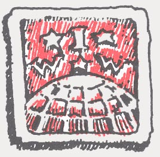

The Way Forward - Kevin Brandstatter, Swindon UK, IWW
The capitalist world is going through a period of restructuring. Much traditional western manufacturing is being replaced by poorly organized service jobs and highly technical manufacturing under virtual slave conditions. The cost of massive reorganization of industry is being passed on to the working class in two ways. It has caused severe reductions in welfare and social security benefits provided by the state and real reductions in the wages of many workers. The unions on both sides of the Atlantic have turned away from organizing and returned to reaching sweet-heart deals with the bosses to preserve their declining empire.
In the areas of the industrial workforce where most unions are organized they act as the bosses' cops, restraining militancy and putting a break on "excessive" demands. These organizations focus themselves on working within the confines of the business world, playing by the rules and making compromises. The members of many of these unions have not developed theories of class struggle, nor of an alternative to capitalism. In fact, many unions are active supporters of the system and have large shareholdings in private enterprise.
This is where the IWW is radically different. The IWW has a number of advantages over these unions that we must exploit in order to promote our shared ideal of an active, organized and revolutionary working class movement. Firstly we are on our own in the international labour movement in recognizing the problem: the wage system itself, not different pay rates between different trades. Capitalism is a system which perpetuates race and gender discrimination; this is most immediately evidenced by those in positions of power and influence: well-educated white males. Capitalism is a sytem which needs a permanent block of unemployed people to make itself work. Most bosses do not hide that those who fill industrial positions, especially in the service sector, are expendable and replaceable ("there are millions out there waiting to do your job, make a sacrifice for the good of the country/company etc."). Capitalism is a system which by its very nature ensures that exploitation is a matter of fact, not conjecture.
Secondly, the IWW has as part of its history a tradition of recruiting where other unions fear to tread, or to ensure their own advantage, refuse to organize. In the early part of this century its members were agricultural workers, immigrants, and others among the class of the very low paid. Now our membership is, or should be, the Boulevard Bingos workers of this world, the unemployed, black workers and anybody who is disenfranchised by capitalism.
However, looking at the IWW today, one could see an organization with a centralized administration. If in the coming year 200 workers join the union it will seize up. We do not have the capacity as a centralized organization to deal with an influx of members and the GA would be left doing nothing apart from copying the GOB and responding to criticism about why nothing was being done. Anyone who has read Ursula Le Guin's book, The Dispossessed, should be able to recognize the perils of a centralized government. This is not the Wobbly way forward. A small organization of 400-500 people can not be "run" by an all-powerful core of control. Too much power can be invested in such an administration, not through the desires of those in it but through the logic of a type of organization which gives the incumbents the role of "guardians" of the union. The current GST can not be blamed personally for this situation because it was inevitable. Changing the personnel will not result in a better union. The union needs to change fundamentally, in its very design.
 There is no perfect structure for a revolutionary organization. There is no point for the members of the IWW to pretend otherwise. There is also no perfect structure for a union. Still, the combination of structure and consciousneses will have an influence over the way the union operates, the way members behave and the general success or otherwise of the union. I would argue that the union structure we have is undemocratic, out of date, centralized and, most importantly, not collective. The union is undemocratic because its officers and executive are only subject to annual election and a recall process which can take most of the year to complete. It is out of date because its working philosophy does not motivate the IWW to be interested in growth and conducting the class struggle. It is largely centralized because above the level of branches there is only one official structure, the General Executive Board. The IWW is individualized because much of the constitution is based on notions of western liberal democracy, for example the individual referenda, powerless branches, the assembly of individuals and ballot requirements. If the union is to grow in its tenth decade of existence and establish itself as a voice of the discontented things must change!
I propose:
- a new structure for the union based on industrial union branches as the fundamental unit of organization
- regional organizing committees, to coordinate the activities of the IWW IU branches in different areas
- a general delegate board (instead of a GEB) to coordinate the activity of the global union
- the introduction of collective decision making rather than isolated individual decision making
In practice the union would be built in steps from the bottom:
- IU branches (including a union for the unemployed) electing delegates to the regional organizing committees who in turn elect delegates to the general delegate board
- an annual delegate conference
- The general administration would move every two years in rotation to each regional organizing committee. As far as possible the funding of the union would be decentralized as would matters like ``local'' editions of the IW, the raising of dues and IWW activity.
I believe the result would be a union with a lot less central control than now and one which will be more vibrant than in the recent past. I have no doubt we would still have problems both of a personal or political nature but we need to get on with the task of changing the way we operate NOW while we are small enough to do so.
A new pamphlet by Kevin Brandstatter on the IWW and the 21st Century expanding on the ideas above will be available soon. Contact the Swindon IWW for more information. - [quote from Tsunami].